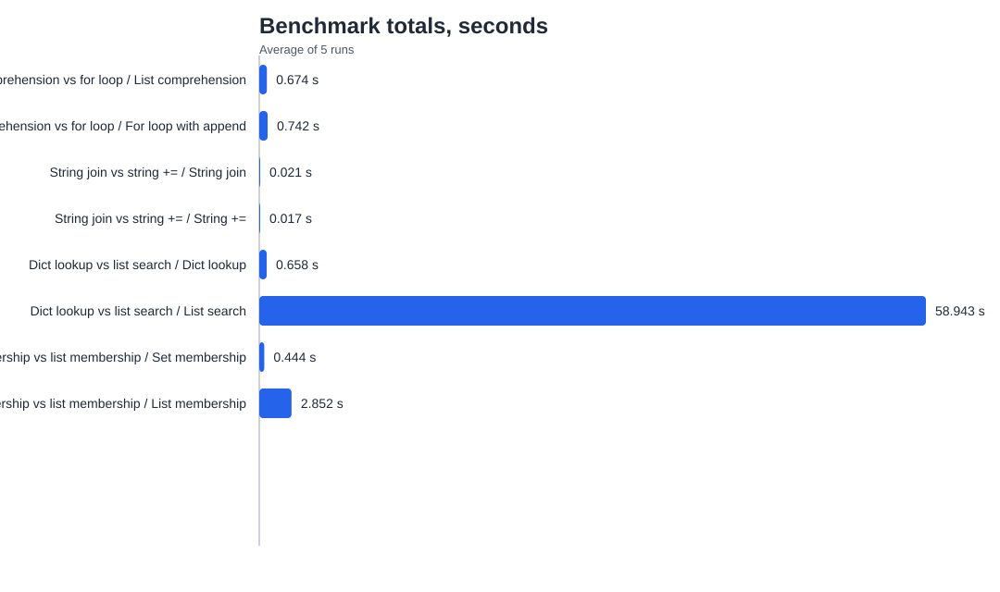
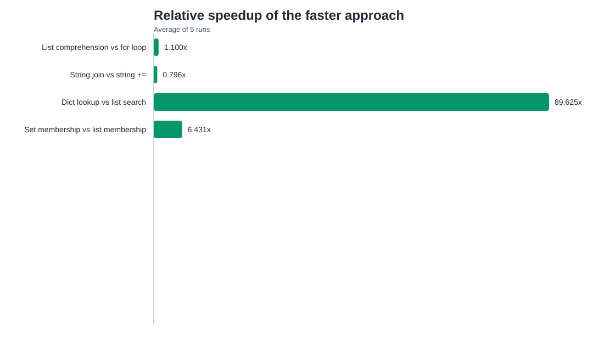

Тесты в Python и CPython
Учебный проект, практика, CI, бенчмарки
Сравнение unittest и pytest, линтеры и тайпчекеры,
автоматический CI, мини-бенчмарки и то, как проверка кода устроена в CPython.
Плюс 20 `subtests`, проходящих в локальном прогоне.
Сравнение структур данных и подходов к коду.
Автопроверка тестов, линтера и тайпчекера.
Проверяют одну функцию или небольшой блок логики.
Подтверждают, что старая ошибка не вернулась после изменений.
Проверяют, как несколько частей системы работают вместе.
Измеряют время выполнения и помогают сравнить подходы.
Локальный прогон завершился без ошибок.
Подтверждают корректность набора дополнительных сценариев.
Стандартный прогон тоже полностью проходит.
`ruff` и `mypy` завершились чисто.
Проверяет стиль, потенциальные ошибки и проблемные конструкции в коде.
Проверяет, насколько код согласован с аннотациями типов.

Файл: `benchmark_results/totals.svg`

Файл: `benchmark_results/speedup.svg`
Готовит окружение перед запуском проверок.
Проверяет функциональное поведение проекта.
Добавляют статический контроль качества кода.
Это переводит проверки из ручного режима в автоматический и повторяемый.
Разработчик запускает локальные тесты и утилиты вроде `make patchcheck`.
Изменения должны пройти автоматические проверки до merge.
Они ловят проблемы, которые не видны на одной локальной машине.
Часть ошибок проявляется уже после commit в основной репозиторий.
Тест формально запускается, но ничего не проверяет.
Показывает прямое падение при неправильной логике проверки.
Условие слишком широкое и не гарантирует корректность.
Код падает, а тест не оформляет это как ожидаемое поведение.
Тесты начинают зависеть друг от друга.
Частый практический источник ложных падений и путаницы.
Полноценное тестирование включает не только сами тесты, но и статический анализ, автоматический CI, performance-проверки и инфраструктуру контроля качества, как это устроено в CPython.